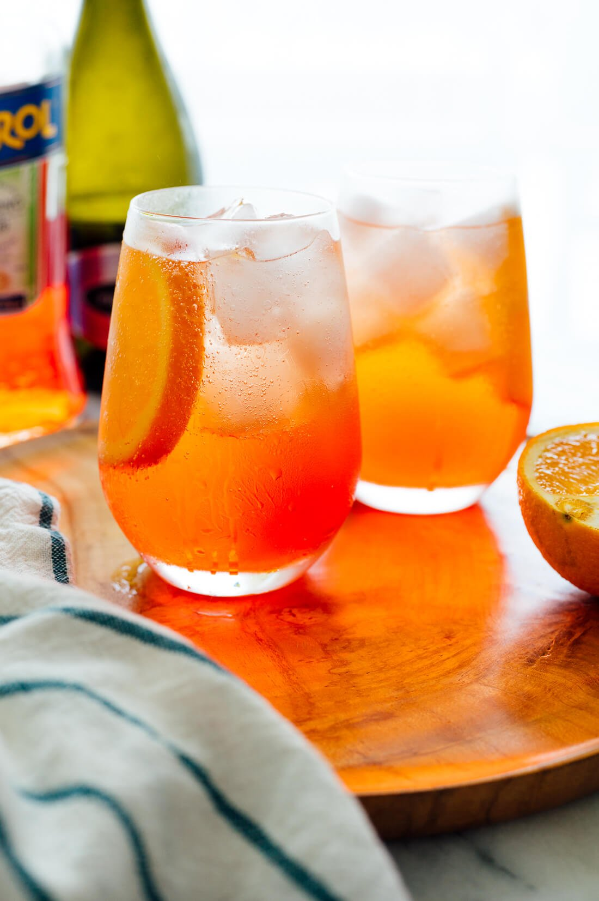

Aperol Spritz

What is Aperol Spritz drink?
Aperol Spritz is a light and refreshing cocktail
with an aromatic citrusy taste. The zesty, bittersweet
orange flavour with herbal and woody notes from the
Aperol is perfectly complemented by the subtle sweetness,
floral notes, and delicate bubbles of the Prosecco.
A proper Aperol Spritz tastes like summertime in Italy
and looks like a golden orange sunset!
Ingredients
- Aperol
- Prosecco
- Sparkling water
- Ice
- Slice of orange
- Green olive
Instructions
- Fill up your glass with ice.
- Add Prosecco, Aperol and sparkling water
in proportion 3-2-1 (as an example: 75ml of Prosecco, 50ml of Aperol, 25ml of soda).
- Finish by adding slice of fresh orange and one green olive on a toothpick.
Credits:
Return to the top
Return to main page